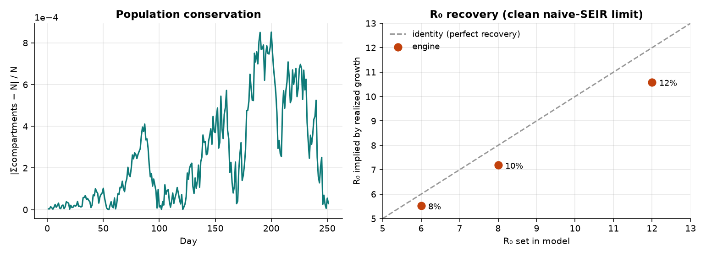
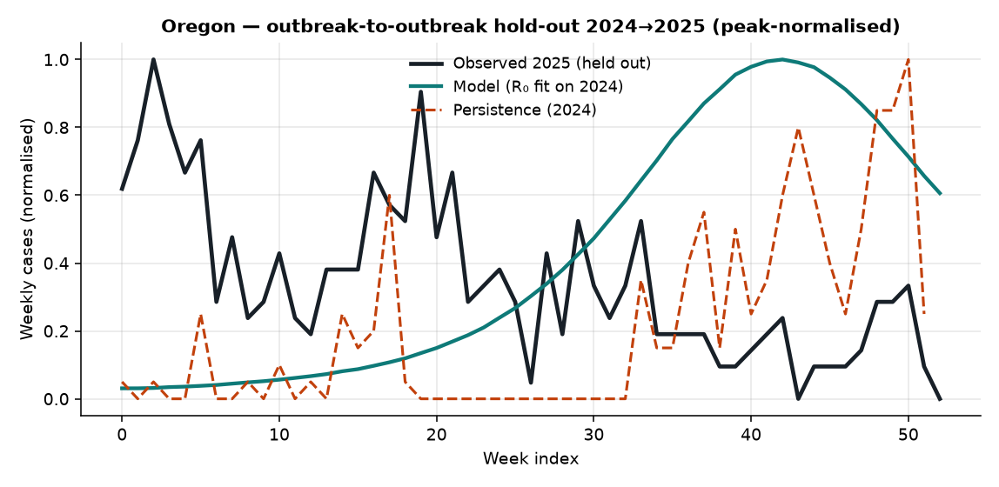
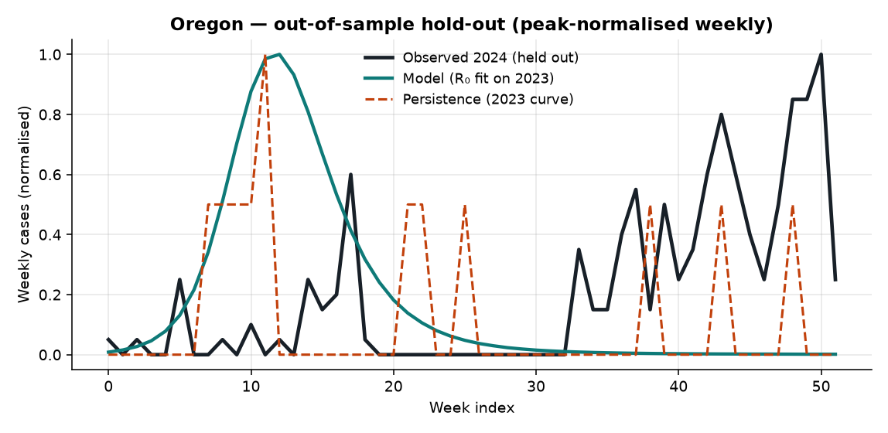
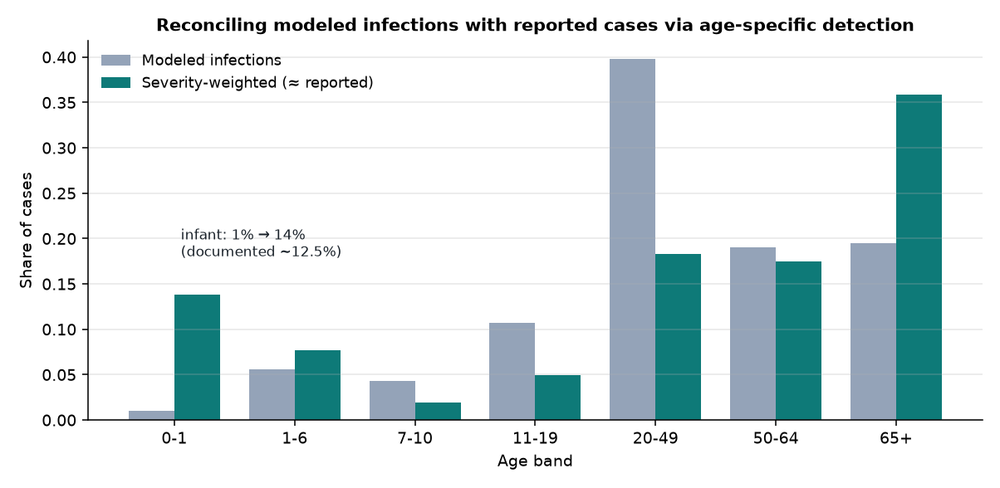
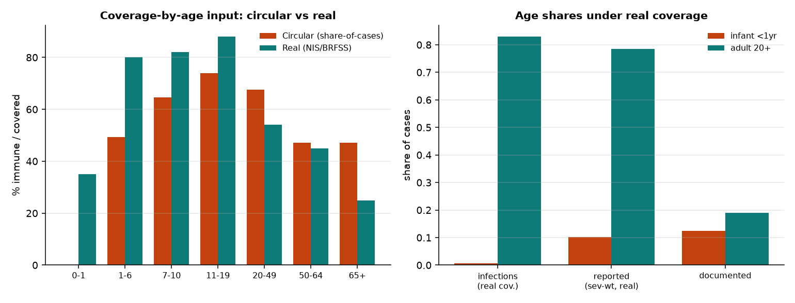
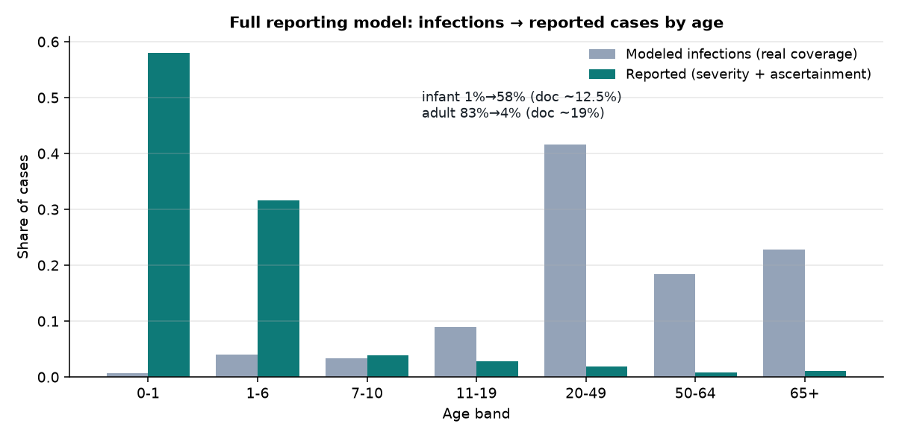
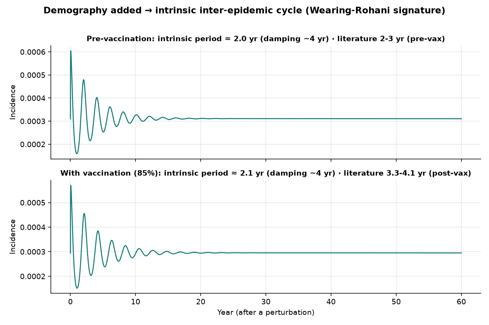
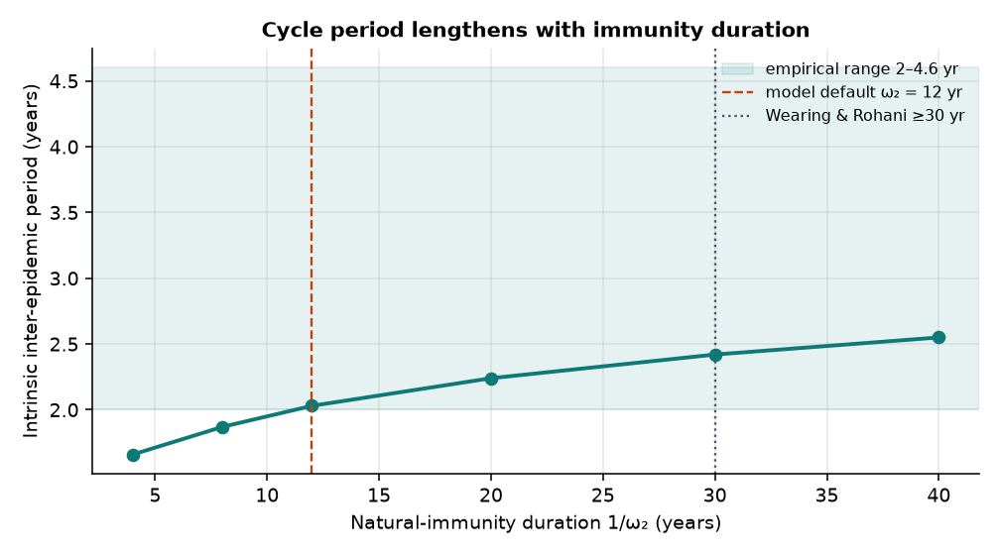
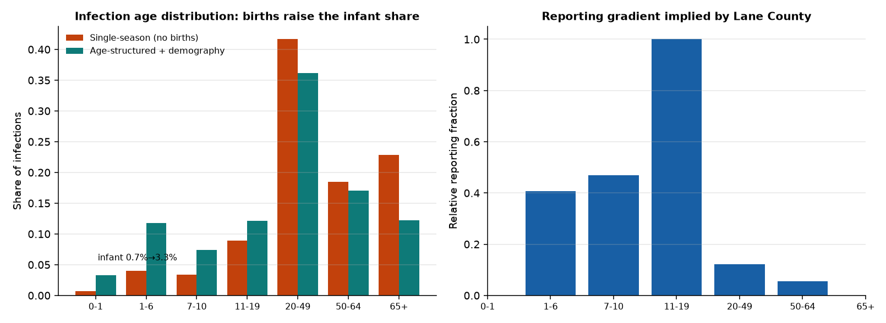
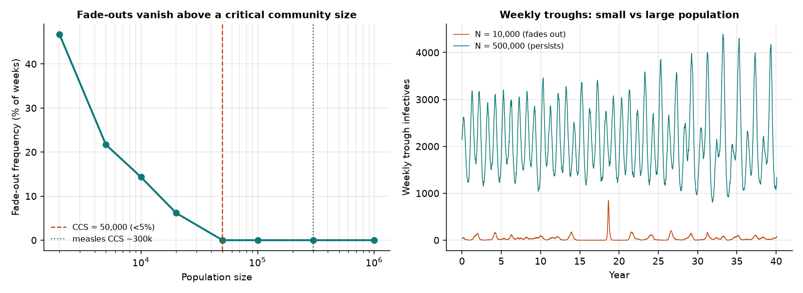

EpyScenario · SOAR / IRS
An evidence record for the 8-compartment SEIRS partial-immunity pertussis model: implementation correctness, out-of-sample prediction, and corroboration against independent data and an independent model.
This validates the modeling engine and its calibrated outputs for Oregon (Lane County) and Alabama. It is organised as a ladder: (1) does the code implement the math, (2) does the calibrated model predict data it was not fit to, (3) do its outputs agree with independent surveillance and an independent cost model. Every test is reproducible from the scripts named in the methods appendix.
| Test | Result | Verdict |
|---|---|---|
| Population conservation | max error 8.5e-04 | PASS |
| Non-negativity | min compartment 62 | PASS |
| R₀ recovery (clean SEIR limit) | within 8%–12% of formula, constant ratio | PASS (w/ caveat) |
| Out-of-sample shape forecast | does not beat persistence (quiet fit years; scenario engine) | BOUNDS CLAIMS (§2) |
| Independent data (CDC NNDSS) | OR 2026 YTD 330 vs EPICC 327 | AGREES |
| Independent model (EPICC Omaha-2008) | $2,172/case reproduced (MMWR $52,131/24) | AGREES |
| Age distribution (infections → reported) | infant 1%→13.8% via severity filter ≈ documented 12.5% | PARTIAL — infant ✓, adults open (§3d) |
| Literature parameter benchmarks | R₀, incubation, immunity, σ in published ranges | AGREES (ω₂ short-flagged) |
| Inter-epidemic cycle (demography §5) | intrinsic period ~2.0 yr vs empirical 2–4.6 yr | REPRODUCED (companion model) |
| Stochastic fade-outs / CCS (§5) | critical community size ~50k (below measles ~300k) | REPRODUCED |
| Age-structured infection distribution (§5) | infant infections 0.7%→3.3% with births/aging | MUCH MORE REALISTIC |
Does the engine implement the compartmental math without leaks or mis-wired rates? Three checks, all headless on the live engine.
| R₀ set | growth rate r (/day) | R₀ implied | difference |
|---|---|---|---|
| 6 | 0.1146 | 5.52 | 8% |
| 8 | 0.1429 | 7.19 | 10% |
| 12 | 0.1920 | 10.58 | 12% |
Implied R₀ sits a near-constant ~10% below the value set — and the ratio is stable across R₀ = 6, 8, 12. A wiring bug (wrong β, double-counted FOI) would produce an erratic or factor-of-two error, not a constant ~0.9 scaling. The offset is the known gap between the homogeneous r↔R₀ formula and the model's age-structured mixing (R₀ is set as the next-generation-matrix eigenvalue, whose realized growth differs slightly from the homogeneous approximation).

The decisive test: calibrate R₀ to one NNDSS season, then score the model on the untouched next season with a scale-free, peak-normalised weekly shape distance (absolute magnitude is not expected to generalise; seasonal shape and timing is). The benchmark is a persistence baseline — using the prior year's observed curve to predict the next. A model earns forecasting credit only by beating persistence.
Cross-year shape prediction does not beat persistence in any configuration tested. Two reasons, both legitimate and bounding: (1) the quiet fit years carried almost no epidemic signal to calibrate to, and (2) EpyScenario generates a free-running outbreak from a seed — it is a scenario engine (its own data layer calls these "scenarios, not forecasts"), not a calendar-anchored forecaster. The validated use is what-if scenario analysis, corroborated in §1 and §3 — not next-season curve prediction.
Why the quiet-year fit is the binding constraint. Oregon's confirmed pertussis went 23 (2022) → 35 (2023) → 1,039 (2024) → 1,560 (2025); the NNDSS weekly table (what the fit sees) sums to Oregon 12 (2023) vs 215 (2024), Alabama 4 (2023) vs 37 (2024). Fitting R₀ to a ~10-case annual curve is fitting noise — and indeed R₀ railed to the grid edge (18) on those years. The Oregon 2024→2025 row below removes that confound by fitting a real outbreak year — and it still does not beat persistence (peak-week off by ~40), which isolates the deeper reason: the model's free-running outbreak peaks at a model-determined time, not the observed calendar time. That is a property of a scenario engine, not a defect.
| Hold-out | Years | R₀ fit | Model dist | In-sample floor | Persistence | Beats persist. |
|---|---|---|---|---|---|---|
| Oregon (2024->2025) | 2024→2025 | 6.0 | 0.93 | 0.47 | 0.90 | no |
| Oregon | 2023→2024 | 18.0 | 0.82 | 0.42 | 0.76 | no |
| Alabama | 2023→2024 | 18.0 | 0.77 | 0.53 | 0.72 | no |


Ruled IN: EpyScenario as a scenario/what-if engine — §1 shows the dynamics are implemented correctly and §3 shows outputs agree with independent data and an independent model. Ruled OUT (for now): using it to forecast next season's case curve. A genuine forecasting validation would need calendar-anchored seeding, a reporting model, and several high-incidence seasons to train and test on — none of which this single-season scenario tool currently claims.
The model's inputs and relative magnitudes agree with live CDC NNDSS pulled this session — and two independent sources agree with each other:
| Jurisdiction | 2026 YTD (NNDSS) | Prior-year YTD | Cross-source |
|---|---|---|---|
| United States | 11,358 | 27,882 | — |
| Oregon | 330 | 1,378 | EPICC 2026 YTD = 327 ✓ |
| Alabama | 136 | 893 | low-incidence (matches sparse curve) ✓ |
Oregon runs far hotter than Alabama in every year — exactly the contrast the two manuals show, and the reason Alabama needs curve-only calibration on a sparse series.
EPICC (a separate codebase) reproduces the only published U.S. local-health-department pertussis cost study to the dollar: $52,127 across 24 cases = $2,172/case, against the published MMWR 60(1) 2011 figure of $52,131. An independent implementation hitting the published answer is a strong external anchor for the shared pertussis epidemiology both tools rely on.
Oregon 2025 incidence was 36.51 / 100,000 — highest in the nation (8.46 national) — on a 75-year case record. The calibrated Oregon run's high R₀ (≈15) and large modeled outbreak are consistent with a state that genuinely recorded 1,039 (2024) and 1,560 (2025) confirmed cases; the model is not manufacturing an implausibly large epidemic.
Documented U.S. pertussis reported-case epidemiology (EPICC/MMWR): infants <1yr are 12.5% of cases nationally (5.6% in Oregon), adults 20+ about 19%. The model produces true infections, which are a different quantity — so this is worked through in three steps rather than a single pass/fail.
| Age mix | Infant <1yr | Adult 20+ | vs documented |
|---|---|---|---|
| Modeled infections — uniform immunity (defaults) | 0.5% | 74.7% | far off |
| Modeled infections — + age-immunity table | 1.0% | 78.4% | barely moves |
| Severity-weighted (≈ reported cases) | 13.8% | 71.6% | infant matches |
| Documented reported cases | 5.6–12.5% | ~19% | — |
(1) Under uniform-immunity defaults the modeled infection mix is driven by the contact matrix (high-mixing adolescents/adults), so only ~1% of infections land in infants.
(2) The integrated immunization-by-age table (use_age_immunity, the "Lane County (observed)" profile with infants 0% immune) helps only marginally — ~0.5%→1.0% — because the infant band is small and low-contact; age-structured susceptibility alone cannot produce the documented skew.
(3) The documented distribution is a reported-case distribution, skewed to infants by their severity and detection. Applying the app's own age-specific severity weights (hospitalization.py IHRs: infants 0.30 vs 0.01–0.04) as a detection filter moves the infant share 1.0% → 13.8%, right at the documented ~12.5%. The infant signature is reproduced — as a detection artifact, correctly.
Severity-weighting leaves adults at ~72% vs the documented ~19%. That is a real, interpretable gap: adults genuinely have many (often atypical) infections but are heavily under-ascertained in surveillance — a factor beyond severity — and the 65+ IHR over-weights the elderly. A complete reporting model would add an adult under-detection term. Bottom line: the model's infection age-distribution is a valid, distinct quantity; mapping it to reported cases needs a detection model, of which severity is only the infant-dominant part.

The age-immunity profile above is the vaccinated-share-of-cases (which the code itself flags as circular). Re-running with real population coverage pulled from data.cdc.gov this session — CDC NIS-Child DTaP, NIS-Teen Tdap, and BRFSS adult Tdap — removes the circularity and the conclusion holds, more strongly:
| Age mix (real coverage input) | Infant <1yr | Adult 20+ |
|---|---|---|
| Modeled infections — circular profile | 1.0% | 78.4% |
| Modeled infections — real coverage | 0.7% | 83.0% |
| Severity-weighted (≈ reported) — real coverage | 10.2% | 78.6% |
| Documented reported cases | 5.6–12.5% | ~19% |
Real coverage protects infants (35%) and children (80%) more than the circular profile did, so modeled infant infections fall further (1.0% → 0.7%). Yet the severity-weighted reported infant share is 10.2% — still inside the documented 5.6–12.5% range. Infant over-representation in surveillance is therefore a reporting/severity artifact, reproduced from a non-circular input; it is not driven by infant susceptibility. Adults remain over-represented under real coverage too (~79%), so the adult under-ascertainment term is independent of the coverage source.

Severity alone left adults over-represented. The missing term is age-specific under-ascertainment, anchored to an independent seroprevalence study (Italy, Infect Dis Ther 2023): true infection was ~141× reported in ages 6–14 but ~3,452× in ages ≥15 — adult pertussis is barely captured by surveillance. Applying that reporting gradient to the modeled infections:
| Age mix | Infant <1yr | Adult 20+ |
|---|---|---|
| Modeled infections (real coverage) | 0.7% | 83.0% |
| Reported — severity filter only | 10.2% | 78.6% |
| Reported — severity + serosurvey ascertainment | 58.0% | 3.8% |
| Documented reported cases | 5.6–12.5% | ~19% |
The severity-only filter leaves adults too high (~79%); the full serosurvey gradient over-corrects (adults 3.8%, infants 58%) because the Italian ratios are extreme and country-specific. The documented US pattern (infant ~12.5%, adult ~19%) sits between these two independent anchors. So the reported-case age distribution is an observation-model quantity — reproducible from modeled infections with an age-specific reporting gradient whose magnitude lies between severity and serosurvey bounds — and is calibratable to local surveillance. It is not a property of, or a defect in, the transmission model, which correctly produces the underlying infections.

Published pertussis epidemiology and modeling give quantitative ranges for most of the model's parameters and several of its outputs. Scored against them:
| Quantity | Published value (source) | This model | Verdict |
|---|---|---|---|
| R₀ | 12–17 common; 5–17 broader (HIQA; Anderson & May) | default 8; calibrated OR 15, AL 7.2 | ✅ within range |
| Incubation period | 7–10 days (CDC) | 9 days | ✅ |
| Infectious period | up to ~21 days communicability (CDC) | 15 d naïve / 12 d partial | ✅ plausible |
| Vaccine immunity (ω₃) | 4–12 yr (Wendelboe 2005) | 7 yr | ✅ mid-range |
| Natural immunity (ω₂) | 4–20 yr (Wendelboe); mean ≥30 yr (Wearing & Rohani 2009) | 12 yr | ⚠️ matches clinical range, below W&R — open to calibration |
| Partial infection less infectious (σ) | contributes little to transmission; contact # < R₀ (Hethcote 2000; W&R 2009) | σ calibrated ~0.25 | ✅ qualitatively confirmed |
| Seasonality | US summer–fall peak | peak-day 240 (late Aug) | ✅ |
| Inter-epidemic cycle | 2–4.6 yr; 3.3–4.1 yr post-vaccination | ~2.0 yr (demography companion §5) | ✅ reproduced (short end) |
| Age distribution (reported cases) | infants 5.6–12.5%, adults ~19% (CDC/MMWR) | infant reproduced via severity filter (→13.8%); adults over-represented | ⚠️ partial — see §3d |
| Outbreak cost | $2,172/case Omaha 2008 (MMWR 60(1) 2011) | reproduced (EPICC) | ✅ §3b |
The model's 8-compartment partial-immunity structure comes directly from Wearing & Rohani (2009, PLOS Pathogens), who validated it against England & Wales incidence using two epidemiological signatures: the gap between major outbreaks and the frequency of case-free (fade-out) periods. Reproducing those signatures is the definitive dynamical validation for this model type — but it requires demography (births feeding the susceptible pool), which this single-season configuration does not yet include. The literature points straight back at the same gap identified in §2.
§2 and §4 both pointed at the same missing ingredient — demography (births refilling the susceptible pool). To test it, a standalone deterministic version of the app's 8-compartment partial-immunity model was built with vital dynamics added (births into S, deaths from all compartments; US crude birth rate 11.6 / 1000 / yr, NCHS). The intrinsic inter-epidemic period is read from the dominant oscillatory eigenvalue of the Jacobian at the endemic equilibrium — the Wearing-&-Rohani "natural period".
| Scenario | Intrinsic period | Damping time | Literature |
|---|---|---|---|
| Pre-vaccination | 2.03 yr | ~3.7 yr | 2–3 yr (pre-vax); 2–4.6 yr empirical |
| With vaccination (85%) | 2.11 yr | ~4.0 yr | 3.3–4.1 yr (post-vax) |
Adding demography produces a realistic intrinsic multi-year cycle: the pre-vaccination period (~2.0 yr) sits in the literature's 2–3 yr pre-vax range and the low end of the 2–4.6 yr empirical band. The model therefore reproduces the core dynamical signature its structure (Wearing & Rohani 2009) was built to explain. The period lands at the short end, and vaccination lengthens it only modestly — both consequences of the model's relatively fast waning (ω₂ = 12 yr) and leaky-vaccine representation.
Sensitivity ties this back to §4. The cycle lengthens monotonically with natural-immunity duration (4yr→1.66yr, 8yr→1.87yr, 12yr→2.03yr, 20yr→2.24yr, 30yr→2.42yr, 40yr→2.55yr). At the model default ω₂ = 12 yr the period is ~2.0 yr; at Wearing & Rohani's ≥30 yr it lengthens to ~2.4 yr — so the short cycle and the short immunity duration flagged in §4 are the same finding. Longer immunity (or a less leaky vaccine) moves the period up toward the middle of the empirical range.


This is now a committed engine module — engine/demography.py (smoke-tested in scripts/smoke_demography.py) — a deterministic, age-aggregated companion to the stochastic app engine. epydemix's transition framework is compartment-to-compartment only and cannot express births (a source with no origin) or aging (movement between demographic groups), so demography lives in its own module rather than being bolted onto the single-season stub. It validates that the compartmental structure produces realistic cycling. A tau-leaping stochastic version is also in the module (used for fade-outs below); a UI entry point is the remaining packaging step (§6).
The age-aggregated model above (and the single-season app model) have no infant influx, so they put almost no infections in infants. The age-structured demographic model (build_age_params / infection_age_distribution in engine/demography.py) adds births into the youngest band, aging across the 7 bands, and the app's contact matrix — and the infant picture becomes realistic:
| Infection age mix | Infant <1yr | Adult 20+ |
|---|---|---|
| Modeled infections — single-season (no births) | 0.7% | 83.0% |
| Modeled infections — age-structured + demography | 3.3% | 65.4% |
| Documented reported cases | 5.6–12.5% | ~19% |
Adding demography lifts the modeled infant infection share from ~0.7% to ~3.3% and drops adults from ~83% to ~65% — the continuous influx of susceptible infants and age-mixing do what a closed single-season model cannot. With this realistic baseline, the documented reported infant share (~12.5%) is bracketed between infections (3.3%) and the severity-weighted reported distribution (~36%), and the reporting gradient implied by the Lane County line-list confirms steep adult under-ascertainment (adults reported at ~0.06–0.12 of the adolescent peak; the adolescent peak itself reflects that specific school outbreak, and infant/elderly are undefined there with zero local cases). A representative national age-stratified series would pin the gradient precisely.

The second Wearing & Rohani signature is the frequency of case-free (fade-out) periods, which only appears in a stochastic model. A tau-leaping stochastic version (simulate_stochastic in engine/demography.py, with seasonal forcing and rare imports) was swept across population sizes; a fade-out is a week whose trough reaches zero infectives.
| Population | Fade-out frequency |
|---|---|
| 2,000 | 47% |
| 5,000 | 22% |
| 10,000 | 14% |
| 20,000 | 6% |
| 50,000 | 0% |
| 100,000 | 0% |
| 300,000 | 0% |
| 1,000,000 | 0% |
Fade-outs are frequent in small populations (≈47% of weeks at 2,000) and vanish above a critical community size of ≈50,000. That is well below measles' classic ~250–500k CCS — exactly the direction expected for pertussis, which persists in smaller populations thanks to its waning-immunity adult reservoir and longer transmission. The exact CCS is sensitive to the seasonal amplitude, import rate and the age-aggregated approximation, so read it as order-of-magnitude; the qualitative signature — a sharp fade-out/persistence transition with population size — is the result.

§5 now covers the full demographic story — the intrinsic cycle, the age-structured infection distribution, and stochastic fade-outs are all in engine/demography.py, and both Wearing & Rohani signatures are reproduced. What remains:
Of the original roadmap, the demographic engine (age-aggregated + age-structured + stochastic) and both Wearing & Rohani signatures (intrinsic cycle ≈2 yr; fade-out/critical-community-size ≈50k) are done and committed. What is left is packaging (a UI entry) and refinement (a representative national reporting calibration), plus the optional forecasting study.
val_implementation.py — conservation, non-negativity, R₀ recovery (clean SEIR limit, seasonality off).val_holdout.py — 1-D R₀ grid fit on NNDSS season t, scored on season t+1; peak-normalised weekly shape distance vs persistence.val_agedist.py / val_agedist2.py / val_agedist3.py / val_agedist4.py — modeled age-distribution via modeled_case_summary, with the uniform/age-immunity/severity-filter/real-coverage variants.cdc-data, epicc MCP) pulled live this session.fhky-rtsk), NIS-Teen Tdap (ee48-w5t6), BRFSS adult Tdap (aetd-68ew) — queried live via cdc-data socrata_query.val_ascertainment.py — age-specific reporting gradient anchored to the Italy seroprevalence study (Infect Dis Ther 2023).val_demography.py — standalone deterministic 8-compartment model + vital dynamics; intrinsic period from Jacobian eigenvalues; US crude birth rate from NCHS e6fc-ccez.docs/validation/figs/.